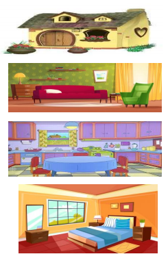

Niveau : 2 ème année
Support 1: chanson 'ma maison' click !
Support 2 : les différentes parties de la maison click !
| Contenu | Modalité de travail | support |
|---|---|---|
|
1- Ecoute attentive :
Visionner la chanson ma maison en l'accompagnant de la gestuelle
Chanter au meme temps que la chanson et inviter les apprenants à
faire de meme.
Zoom sur l'image c'est une maison
2- Comprendre et apprendre Présenter la vidéo : les différentes parties de la maison Distribuer des cartes images aux élèves et laisser les observer Dire salon et invite l'élève à l'image correspondante . Continuer jusqu'à épuisement de toutes les cartes images . Présenter les deux images supports et faire verbaliser les élèves je dors dans ma chambre / je mange dans la cuisine. Jeux : mettre les élèves en file en trois groupes devant le tableau A l'annonce d'une phrase , le premier de chaque groupe doit taper sur le moment correspondant ( s'il se tompe , il quite le jeu) . 3-Evaluation faire chanter les élèves en entier en alternant groupe casse / petits groupes / individuellement |
Groupe classe Travail de groupes |
Chanson : ma maison  |
Objet : la graphie ‘’ gne ‘’
Reconnaissance auditive : La maitresse lit la comptine et demander aux élèves de discriminer le son qui se
répète gnon,gnon, gnon
J'aime les champignons
Gné,gné,gné
J'aime les beignets
Les élèves identifient le son ‘’ gne ‘’ Jeu de pigeon en vol :
Corpus: le chat / champignon / baignoire / viande / campagne / rat / oignon
Reconnaissance visuelle :
Le vétérinaire soigne le petit agneau.
La maitresse lit la phrase et la présente sur TN Elle demande aux élèves de souligner les mots où ils entendent gne
Découper les mots en syllabes / faire identifier la syllabe contenant le son gne
Demander aux élèves de donner d’autres contenant gne .
Demander aux élèves de produire des phrases .
Entrainement : Réaliser l’exercice 3 du CA page 29
Evaluation :
Je complète les phrases par : campagne / champignon / mignonne
Cette fille est ……………………. Les amis sont ………………….. Je préfère une salade en ……………………